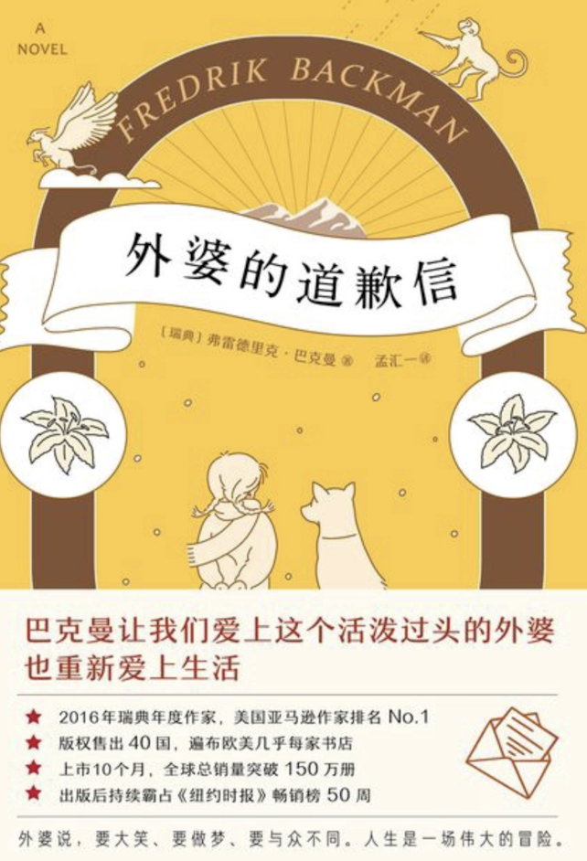
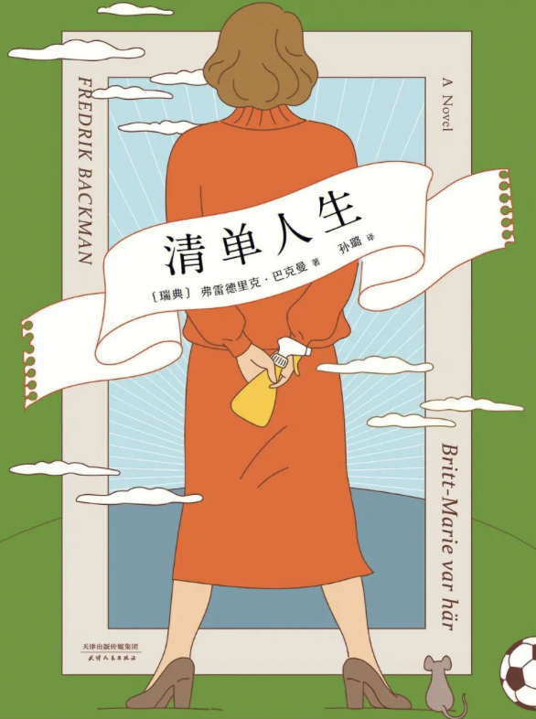
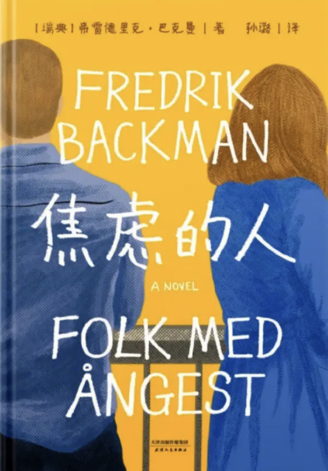

巴克曼三部曲
| 作者： | 弗雷德里克·巴克曼(Fredrik Backman) |
| 国别： | 瑞典 |
| 体裁： | 小说 |
1.外婆的道歉信
| 标签： | 亲情、成长、爱 |
| 阅读时间： | 20240120-20240130 |
| 评分： | 🌟🌟🌟🌟 |
故事梗概
一个七岁的早熟少女与一个七十多岁的疯狂外婆的故事，两个分子的碰撞与反应，是关于爱、关于勇敢、关于守护与原谅的题材。作者笔下描述的人物，从小朋友到流浪汉，这些都是不同寻常且又真实平常的人，充满着生活的烟火气与真实气。
我的书评/读后感
在推荐和一般之间还是选了推荐 先说推荐在哪，在里面外婆独特的生活和教育方式，人物关系之间的真情流露，八岁小孩的成熟……最质朴的情感也最容易赢我眼泪啦！ 一般在作者你前几章和最后几章写那么流利，写那么好，为什么中间那么多章这么爱卖关子啊啊啊啊啊，看的人很累，各种隐含象征，不是不支持，但是太多就显得太刻意啦～～～～～
2.清单人生
| 标签： | 女性、成长、爱 |
| 阅读时间： | 20240201-20240204 |
| 评分： | 🌟🌟🌟🌟 |
故事梗概
一个63岁的女人布里特-玛丽舍弃过去，开始新生活，并在新生活中遇到了一群可爱的孩子们。作者力求告诉每个读者：人生中最艰难的是，舍弃无比舒适的生活，重新开始。
我的书评/读后感
是啊我也落入了俗坑，心里极力希望布里特-玛丽在肯特和斯文之间选择斯文，但是63岁的她并没有，而且跳出了这个选择题，因为人生的选择本就不只这两个，不只安稳和男人。在博格所有人心里，对她来说，在63岁开始的人生也并不晚！！！也希望自己never be afraid of a new beginning!!!!!!!!人生嘛，本来就是越活越精彩～ 不过有一说一，萨米这么好的孩子怎么就死了😫😫😫
3.焦虑的人
| 标签： | 成长、悬疑、爱 |
| 阅读时间： | 20240209-20240213 |
| 评分： | 🌟🌟🌟🌟 |
故事梗概
究竟是何种程度的无奈和绝望，迫使一个中年人在新年来临前的早晨，用一把玩具枪抢劫一家无现金银行。行动失败的劫匪仓皇之中逃进一间位于大楼顶层的待售公寓，里面全都是正在看房子的潜在买家。由此开始，抢劫案变成了劫持人质案。然而事情的发展出乎预料，没有警匪对峙、没有致命一击，漫长的一天过后，八名人质安然无恙得到释放，劫匪却完全不见踪影。警察对人质逐一展开讯问，却发现他们每个人都有一肚子的抱怨和疑问，可是谁也说不清楚并且不关心劫匪究竟去了哪里。
我的书评/读后感
这本在我心里应该是巴克曼三部曲的top1，温暖、幽默，再加点悬疑色彩（虽然作者还是那么卖关子）……情节很流畅，细节也写得很好，虽然没有平铺直叙，但每个点都能呼应上，很会写。至于道理，巴克曼已经说完了，有时候那些不经意遇到的人，意外发生的事，可能恰恰就是上帝派来拯救你的……